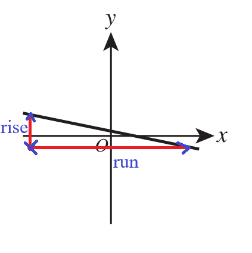
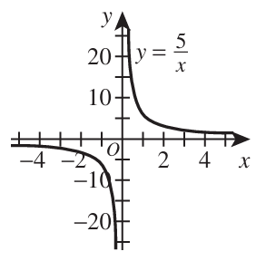
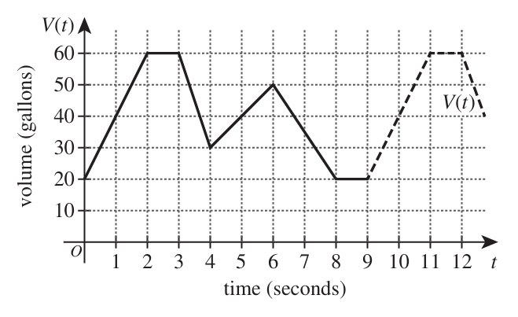
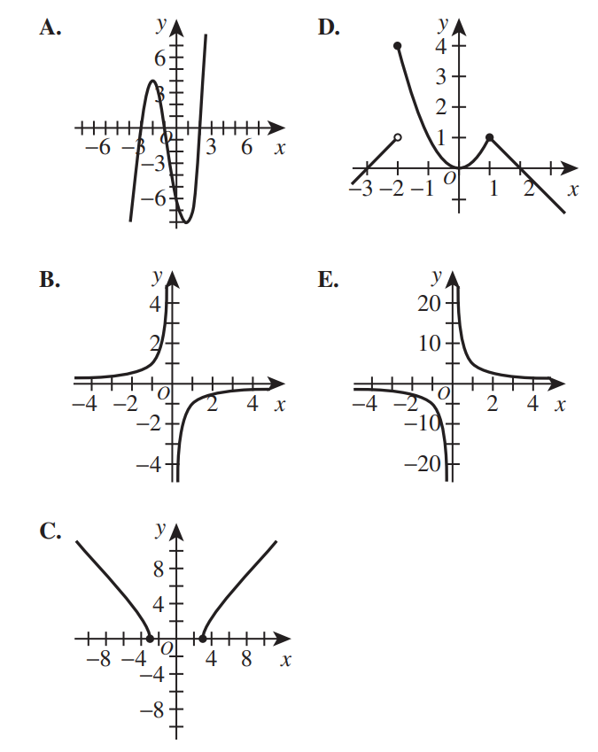
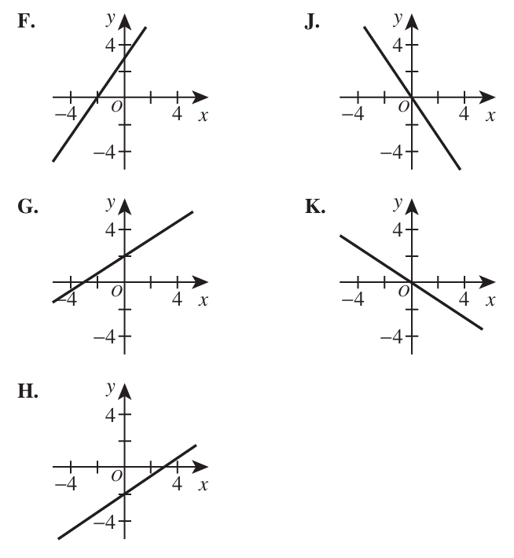
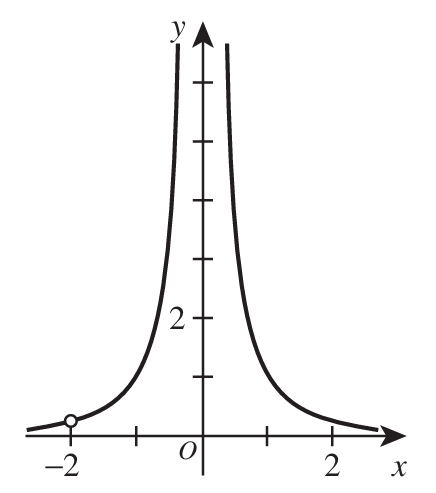
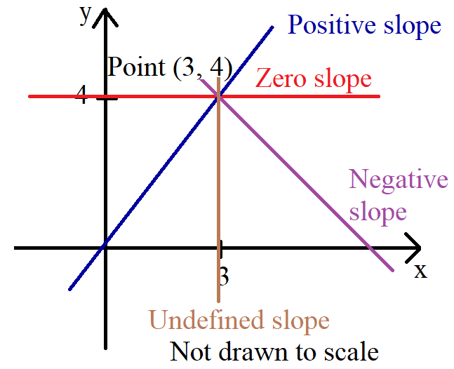
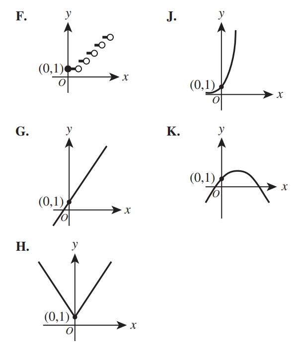

For the Classic ACT exam:
The ACT Mathematics test is a timed exam...60 questions in 60 minutes
This implies that you have to solve each question in one minute.
Each of the first 20 questions (less challenging) will typically take less than a minute a solve.
Each of the next 20 questions (medium challenging) may take about a minute to solve.
Each of the last 20 questions (more challenging) may take more than a minute to solve.
The goal is to maximize your time.
You use the time saved on the questions you solve in less than a minute to solve questions that will take more
than a minute.
So, you should try to solve each question correctly and timely.
So, it is not just solving a question correctly, but solving it correctly on time.
Please ensure you attempt all ACT questions.
There is no negative penalty for a wrong answer.
Also: please note that unless specified otherwise, geometric figures are drawn to scale. So, you can figure out
the correct answer by eliminating the incorrect options.
Other suggestions are listed in the solutions/explanations as applicable.
These are the solutions to the ACT past questions on the topics: Relations and Functions.
When applicable, the TI-84 Plus CE calculator (also applicable to TI-84 Plus calculator) solutions are provided
for some questions.
The link to the video solutions will be provided for you. Please
subscribe to the YouTube channel to be notified of upcoming livestreams. You are welcome to ask questions during
the video livestreams.
If you find these resources valuable and helpful in your passing the
Mathematics test of the ACT, please consider making a donation:
Google charges me for the hosting of this website and my other
educational websites. It does not host any of the websites for free.
Besides, I spend a lot of time to type the questions and the solutions well.
As you probably know, I provide clear explanations on the solutions.
Your donation is appreciated.
Comments, ideas, areas of improvement, questions, and constructive
criticisms are welcome.
Feel free to contact me. Please be positive in your message.
I wish you the best.
Thank you.
$
y = f(x) \\[3ex]
f(x) = y \\[3ex]
f(4) = 9 \\[3ex]
\implies \\[3ex]
x = 4 \\[3ex]
y = 9 \\[3ex]
\underline{Test\;\;each\;\;option} \\[3ex]
Option\;A \\[3ex]
f(x) = x^2 - 7 \\[3ex]
f(4) = 4^2 - 7 \\[3ex]
= 16 - 7 \\[3ex]
= 9
$
Option A is the correct answer.
(3.) The following linear functions are defined either with an equation, a graph, or a table of values.
Which of the following functions has the greatest slope?
Using the process of elimination to save time:
Option A. is out because it has a zero slope
Option C. is out because it has a negative slope: the y-values decrease as the x-values
increase.
Option B. is the most likely answer because the slope is 8
Options D. and E. has positive slopes, however, the values are less than 8
Student: May you please explain each option? Teacher: Sure, let's do it.
(4.) A relation pairs elements in the domain with elements in the range.
The table below defines a relation where the domain is represented by the x-values and the range is
represented by the y-values.
x
y
3
7
1
3
4
2
6
9
5
4
5
8
Which of the following statements indicates whether this relation is a function of x and provides a
valid reason?
F. It is, because the y-value is always greater than the x-value. G. It is, because there are 5 distinct values in both the domain and the range. H. It is not, because there are 2 different y-values paired with the x-value 3. J. It is not, because there are 2 different x-values paired with the y-value 5. K. It is not, because no equation can be written to model the relationship between x and
y.
Two students can make two different grades on the same test... a Function
Two students can make the same grade on the same test... a Function
However, a student cannot make two different grades on the same test... Not a function
An input may not have more than one output in a function. In other words, a function is a relation in which
each input has a unique output.
The input, x-value of 3 may not have output images of y-values of 6 and 4
Hence, the correct answer is Option H.
(5.) The scales on both axes of the standard (x, y) coordinate plane below are the same.
Of the following values, which one is the best estimate for the slope of the line graphed in the plane?
The graph has a negative slope.
Hence, Options H., J. and K. are out.
Options F. and G. are in.
Let us now check the distance of the rise and run.

$
Slope = \dfrac{rise}{run} \\[5ex]
\text{As seen in the graph, the run has a greater length than the rise} \\[5ex]
\text{Hence, the slope is estimated as } -\dfrac{1}{5}
$
(6.) The function $f(c) = \dfrac{9}{5}c + 32$ gives the temperature, f(c) degrees Fahrenheit, that
corresponds to c degrees Celsius.
To the nearest 0.1°F, what Fahrenheit temperature corresponds to 13.0°C?
$
A.\;\; 33.8^\circ F \\[4ex]
B.\;\; 45.0^\circ F \\[4ex]
C.\;\; 46.8^\circ F \\[4ex]
D.\;\; 55.4^\circ F \\[4ex]
E.\;\; 81.0^\circ F \\[4ex]
$
$
f(c) = \dfrac{9}{5}c + 32 \\[5ex]
c = 13^\circ C \\[4ex]
f(13) = \dfrac{9}{5}\cdot 13 + 32 \\[5ex]
= \dfrac{277}{5} \\[5ex]
= 55.4^\circ F
$
Use the following information to answer questions 7 – 9.
Consider the function $f(t) = -10t^2 + 20t + 80$, graphed in the coordinate plane below.
(10.) Mary throws a stone from the edge of a cliff.
While the stone is in flight, the equation $h = 300 - 30t - 16t^2$ gives the height above the ground, h
feet, of the stone at any given time t seconds after being thrown.
What is the height, in feet, of the stone exactly 3 seconds after Mary throws the stone?
(12.) The graph of the function $f(x) = -9(x + 1)^2 + 81$ has its vertex at point (−1, 81) and
intersects the x-axis at points (−4, 0) and (a, 0).
What is the value of a?
The axis of a vertical parabola is the vertical line through the vertex of the parabola.
It is the x-coordinate of the vertex.
It is the line of symmetry that shows two same halves of the parabola when the parabola is folded
across that axis.
This implies that the axis passes through the midpoint of the x-intercepts
This implies that the axis is the midpoint of the x-intercepts because the midpoint of the
x-intercepts and the x-coordinate of the vertex both have the same x-value
In that regard:
$
f(x) = 2x - 1 \\[4ex]
f(5x) = 2(5x) - 1 \\[3ex]
f(5x) = 10x - 1 \\[5ex]
g(x) = 3x^2 - 7 \\[4ex]
g(f(5x)) = g(10x - 1) \\[3ex]
= 3(10x - 1)^2 - 7 \\[4ex]
3[(10x - 1)(10x - 1)] - 7 \\[3ex]
3(10x)(10x) = 300x^2...\text{The correct answer is Option B} \\[4ex]
$
Student: But, you did not complete it. Teacher: I know...remember that our target should be 1 minute for each question.
Option B is the only option that has $300x^2$ Student: May you complete it? Teacher: Sure, let's do it.
(14.) The function $y = f(x) = \dfrac{5}{x}$ is graphed in the standard (x, y) coordinate plane below.

One of the following statements is FALSE.
Which one?
A. f(x) decreases for all x > 0. B. f(x) decreases for all x < 0. C. The graph of f(x) has a horizontal asymptote at y = 0. D. The graph of f(x) has a vertical asymptote at x = 0. E. The graph of f(x) has an intercept at (0,0).
The graph has a vertical asymptote at x = 0
This implies that it never touches or crosses the x-axis at x = 0
This implies that there is no x-intercept at (0, 0)
Also, we can see from the diagram that the graph did not cross the y-axis at y = 0
This implies that this is false: The graph of f(x) has an intercept at (0,0).
Option E. is the correct answer.
The other options are true.
Use the following information to answer questions 15 – 17.
A pump is used to move water in and out of a tank.
The pump is turned on at t = 0 seconds when there are 20 gallons in the tank.
The function V(t) represents the volume, in gallons, of water in the tank t seconds after the pump
is turned on.
Shown below is the graph of V(t), which is a periodic function with a period of 9 seconds.
The 1st period of V(t) is shown as a solid line, and the rest is shown as dashed.
The pump remains on for 1 hour.

(15.) How many periods does the pump complete in 1 hour?
From our observations of the graph:
The graph follows a periodic function...the same cycle repeats each period
The same cycle repeats every 9 seconds
So, in 51 seconds:
$
51 = 9(5) + 6 \\[3ex]
$
At the 6th second, the volume is 50 gallons.
This implies that after 51 seconds, the volume is 50 gallons.
(17.) A 2nd tank has 30 gallons in it when its pump is turned on at t = 0 seconds.
In terms of gallons of water moved over time, this pump behaves the same as the other pump.
One of the following functions represents the volume, in gallons, of water in the 2nd tank t seconds
after the pump is turned on.
Which one?
The pump is turned on at t = 0 seconds when there are 20 gallons in the tank.
The function V(t) represents the volume, in gallons, of water in the tank t seconds after the
pump
is turned on.
This implies that: $V(t) = 20$
A 2nd tank has 30 gallons in it when its pump is turned on at t = 0 seconds.
$
30 = 20 + 10 \\[3ex]
30 = V(t) + 10 \\[3ex]
$
This represents the volume, in gallons, of water in the 2nd tank t seconds after the pump is turned
on.
(18.) What is the slope of the line passing through the points (−1, 4) and (2, −1) in the standard
(x, y) coordinate plane?
(19.) The graphs of $y^2 = x + 8$ and $y = 3x - 3$ are shown in the standard (x, y) coordinate plane
below.
The 2 graphs intersect at points A and B.
The solution of which of the following equations gives the x-coordinate of point A?
$
\underline{1st\;\;Graph} \\[3ex]
y^2 = x + 8 \\[4ex]
y = \pm\sqrt{x + 8} \\[3ex]
\text{For Point A:}\; y = \sqrt{x + 8} ...\text{because it is a positive}\;y-value \\[5ex]
\underline{2nd\;\;Graph} \\[3ex]
y = 3x - 3 \\[5ex]
\underline{\text{Intersection of 1st Graph and 2nd Graph}} \\[3ex]
y = y \\[3ex]
\implies \\[3ex]
3x - 3 = \sqrt{x + 8}
$
(20.) The cost of a hotel room, y dollars, based on the rating, x, provided by a travel agency
is modeled by the linear equation y = 2.34x + 67.75
Which of the following statements describes the rate of change of this model?
F. For every increase of 1.00 in the rating, the cost increases by $2.34. G. For every increase of 1.00 in the rating, the cost increases by $67.75. H. For every increase of 2.34 in the rating, the cost increases by $1.00. J. For every increase of 2.34 in the rating, the cost increases by $67.75. K. For every increase of $1.00 in the cost, the rating increases by 2.34.
y = mx + b
where m = slope b = y-intercept
y = 2.34x + 67.75 x = independent variable = input = rating y = dependent variable = output = cost m = slope = $2.34.
This is a positive slope.
A positive slope implies that as the input increases, the output also increases.
The interpretation of the slope indicates that:
For every unit change of the input, the output changes by the value of the slope.
Hence, For every increase of 1.00 in the rating, the cost increases by $2.34.
(21.) The function f(x) when graphed in the standard (x, y) coordinate plane has the
features below:
I. One of its intercepts is located at (−3,0)
II. f(x) increases for all x > 3
III. f(x) is not defined for x = −2.
One of the following is the graph of f(x). Which one?

(I.) One of its intercepts is located at (−3,0)
Options B. and E. are out because they do have any intercept at (−3,0)
The graph does not touch or cross the x-axis at (−3,0)
Options A., D., and C. stays
(II.) f(x) increases for all x > 3
Option D. is out because the graph shows a decreasing trend from x ≥ 1
Most likely, it follows that pattern and keeps decreasing for x > 3
Options A. and C. stays
(III.) f(x) is not defined for x = −2.
Option A. is out because f(−2) = 4 ...this is defined
Option C. is the correct answer because it satisfies the features.
(22.) The graph below shows the average daily consumption, in thousands of barrels, of oil for Uzbekistan for
the years 2003 through 2013.
From what year to the following year did the average daily consumption decrease the most?
F. 2003 to 2004 G. 2004 to 2005 H. 2006 to 2007 J. 2009 to 2010 K. 2012 to 2013
As seen from the diagram:
The steepest decline is indiated in red color.
It is the time during which the average daily consumption decreased the most.
It is the most negative slope.
It is from 2004 to 2005
(23.) One of the following graphs in the standard (x, y) coordinate plane is the graph of the equation
3y − 2x = 6.
Which graph?

Let us find the intercepts, then we shall find the correct answer choice.
$3y - 2x = 6$
x
0
$
3y - 2(0) = 6 \\[3ex]
3y = 6 \\[3ex]
y = \dfrac{6}{3} \\[5ex]
y = 2
$
y-intercept
(0, 2)
y
$
3(0) - 2x = 6 \\[3ex]
-2x = 6 \\[3ex]
x = \dfrac{6}{-2} \\[5ex]
x = -3
$
0
x-intercept
(−3, 0)
The correct answer is Option G.
(24.) Two nonvertical parallel lines in the standard (x, y) coordinate plane have the equations $y =
m_1x + b_1$ and $y = m_2x + b_2$.
The 2 lines are not coincident.
Which of the following assertions must be true?
$
I.\;\; b_1 = b_2 \\[4ex]
II.\;\; b_1 \ne b_2 \\[4ex]
III.\;\; m_1 = m_2 \\[4ex]
IV.\;\; m_1 \ne m_2 \\[4ex]
$
F. I only G. III only H. I and III only J. I and IV only K. II and III only
Parallel lines have the same slope.
So, $m_1 = m_2$
Based on the question, the 2 lines are not coincident.
This means that one line does not lie on top of the other line (as if they looked like a single line).
This implies that the two lines are visually distinct from each other.
Hence, they do not have the same y-intercept.
So, $b_1 \ne b_2$
The correct answer is Option K.
(28.) When Jeff starts a math assignment, he spends $5$ minutes getting out his book and a
sheet of paper, sharpening his pencil, looking up the assignment in his assignment notebook, and turning
to the correct page in his book.
The equation t = 10p + 5 models the time, t minutes, Jeff budgets for a math assignment
with p problems.
Which of the following statements is necessarily true according to Jeff's model?
F. He budgets 15 minutes per problem G. He budgets 10 minutes per problem H. He budgets 5 minutes per problem J. He budgets 10 minutes per problem for the hard problems and 5 minutes per problem for
the easy
problems. K. He budgets a 5-minute break after each problem.
Let us analyze this question.
Look at the function: $t = 10p + 5$
Compare to y = mx + b
Dependent variable = y = t = time (in minutes)
Independent variable = x = p problems.
The slope, m = 10 minutes per problem
The y-intercept, b = 5 minutes
(1.) Jeff takes 5 minutes to get prepared prior to solving his math assignment problems.
That 5 minutes is the $y-intercept$
(2.) But, he actually spends 10 minutes on EACH problem.
That 10 minutes is the slope.
So, he budgets 10 minutes per problem....Correct answer
However, he budgets $t = 10(1) + 5 = 10 + 5 = 15$ minutes to get started and solve a problem
He budgets $t = 10(2) + 5 = 20 + 5 = 25$ minutes to get started and solve two problems....and so on and so
forth
(29.) The rational function graphed in the standard (x, y) coordinate plane below is undefined for 2
real values
of x.

One of the following functions is the graphed function.
Which one?
$
F.\;\; y = \dfrac{x + 2}{x(x + 2)} \\[5ex]
G.\;\; y = \dfrac{x - 2}{x(x - 2)^2} \\[5ex]
H.\;\; y = \dfrac{(x - 2)^2}{x^2(x - 2)} \\[5ex]
J.\;\; y = \dfrac{x + 2}{x^2(x + 2)} \\[5ex]
K.\;\; y = \dfrac{x + 2}{x^2(x + 2)^2} \\[5ex]
$
Analyzing the graph based on the 2 undefined values:
1st: We notice a vertical asymptote at x = 0 (both ways: to the left and to the right)
This implies that $x = \pm 0$
This aligns with the statement that $x^2 = 0$ for that possibility to occur
So, $x^2 = 0$ should be at the denominator.
2nd: There is a removable discontinuity (hole) at x = −2
This implies that at x = −2, the numerator is zero and the denominator is zero.
For x = −2; x + 2 = 0
Hence, x + 2 should be at the numerator and also at the denominator.
Looking at the options:
Vertical asymptotes occur when the denominator equals zero and the numerator does not also become zero at
the same point.
The option that correctly defines the graph is: Option J.: $y = \dfrac{x + 2}{x^2(x + 2)}$
(30.) Data for each of 10 students is represented by a corresponding data point plotted in the standard (x,
y) coordinate plane below.
Each point has 2 integer coordinates.
The x-coordinate is the number of hours the student spent studying for a retake test, and the
y-coordinate is the change in score from the original test to the retake test.
Noel drew the line shown through 2 data points to help predict future changes in score.
An 11th student is currently retaking the test.
This student has studied 5 hours for the retake test.
According to Noel’s line, what is the predicted change in score for the 11th student?
A function is undefined when the denominator is zero.
This is because division by zero is undefined.
$
x + 3 = 0 \\[3ex]
x = -3
$
(33.) A line in the standard (x, y) coordinate plane passes through the point (3, 4).
The slope of the line:
A. is positive. B. is zero. C. is negative. D. is undefined. E. cannot be determined from the given information.
Because the line passes through one point (3, 4), the slope cannot be determined from the given information
because it could be any of these:

(34.) The graph of the function $y = -2(x - 3)^2 + 1$ in the standard (x, y) coordinate plane is
translated 2 units to the left and 4 units down to create a new function.
Which of the following equations defines the new function?
$
F.\;\; y = -2(x - 5)^2 - 3 \\[3ex]
G.\;\; y = -2(x - 5)^2 + 5 \\[3ex]
H.\;\; y = -2(x - 3)^2 + 5 \\[3ex]
J.\;\; y = -2(x - 1)^2 - 3 \\[3ex]
K.\;\; y = -2(x - 1)^2 + 5 \\[3ex]
$
$
y = -2(x - 3)^2 + 1 \\[3ex]
\text{HOSH 2 units left} \rightarrow \\[3ex]
y = -2(x - 3 + 2)^2 + 1 \\[3ex]
y = -2(x - 1)^2 + 1 \\[3ex]
\text{VESH 4 units down} \rightarrow \\[3ex]
y = -2(x - 1)^2 + 1 - 4 \\[3ex]
y = -2(x - 1)^2 - 3
$
(35.) Rate of change is defined to be the vertical change between any 2 points divided by the horizontal
change between the same 2 points.
A function containing the point (0, 1) has a constant rate of change equal to $\dfrac{3}{2}$
The function is shown in one of the standard (x, y) coordinate plane graphs below.
Which one?

The function contains (0, 1)...all the options contain (0, 1)
The function has a constant rate of change of $\dfrac{3}{2}$
This means that the function has a slope of $\dfrac{3}{2}$ throughout the graph of the function
This implies a straight line graph function.
The correct answer is Option G.
(36.) In the standard (x, y) coordinate plane, what is the y-coordinate of the intersection
point of the 2 lines with equations below?
$
y = -2x + 23...eqn.(1) \\[3ex]
y = 3x - 7...eqn.(2) \\[5ex]
y = y \\[3ex]
\implies \\[3ex]
3x - 7 = -2x + 23 \\[3ex]
3x + 2x = 23 + 7 \\[3ex]
5x = 30 \\[3ex]
x = \dfrac{30}{5} \\[5ex]
x = 6 \\[5ex]
\text{Substitute the value of x in eqn.(2) so we can find the y-value} \\[3ex]
y = 3(6) - 7 \\[3ex]
y = 18 - 7 \\[3ex]
y = 11 \\[3ex]
For\;\;(x, y) = (6, 11); \;\;y-value = 11.
$
(37.)
(38.) Which of the following expressions is equivalent to $4x^2 + 8x - 12$?
(46.) Before opening her lemonade stand, Haley purchased lemonade mix for $2.30 and a package of cups for
$1.50.
Haley sells each cup of lemonade for $0.50.
Which of the following expressions gives Haley’s total profit, in dollars, from selling x cups of
lemonade?
$
(3x - 1)(2x - 5) = ax^2 + bx + c \\[3ex]
6x^2 - 15x - 2x + 5 = ax^2 + bx + c \\[3ex]
6x^2 - 17x + 5 = ax^2 + bx + c \\[3ex]
ax^2 + bx + c = 6x^2 - 17x + 5 \\[3ex]
a = 6 \\[3ex]
b = -17 \\[3ex]
c = 5 \\[5ex]
a + b + c \\[3ex]
= 6 + -17 + 5 \\[3ex]
= -6
$
(49.)
(50.) The domain of the real-valued function $f(x) = \dfrac{2}{\sqrt{x - 3}}$ is the set of all
x-values that satisfy:
$
F.\;\; x \gt 0 \\[3ex]
G.\;\; x \ge 0 \\[3ex]
H.\;\; x \gt 2 \\[3ex]
J.\;\; x \gt 3 \\[3ex]
K.\;\; x \ne 3 \\[3ex]
$
The function is a rational radical function.
Dealing with Rational Function: 1st Condition: The denominator should not be zero
$
\sqrt{x - 3} \ne 0 \\[3ex]
x - 3 \ne 0^2 \\[3ex]
x - 3 \ne 0 \\[3ex]
x \ne 0 + 3 \\[3ex]
x \ne 3 \\[3ex]
$
Dealing with Radical Function: 2nd Condition: The radicand should must be non-negative (greater than or equal to zero)
$
x - 3 \ge 0 \\[3ex]
x \ge 3 \\[3ex]
\text{Combining both conditions}: \\[3ex]
Domain = \{x: x \gt 3\}
$
(51.)
(52.) For $f(x) = 2x + 3$ and $g(x) = x^2 - 4$, which of the following expressions represents $f(g(x))$?
$
f(x) = x^5 \\[3ex]
y = x^5 \\[3ex]
\text{Interchange x and y} \\[3ex]
x = y^5 \\[3ex]
y^5 = x \\[3ex]
y = \sqrt[5]{x} \\[3ex]
\text{This new } y \text{ is the inverse} \\[3ex]
f^{-1}(x) = \sqrt[5]{x}
$